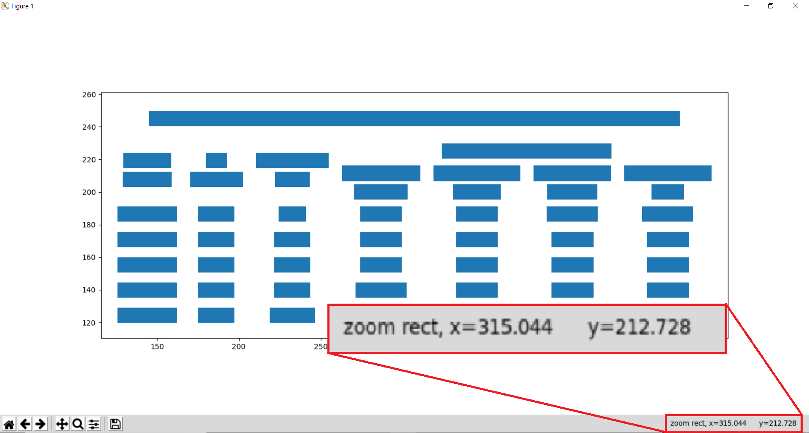
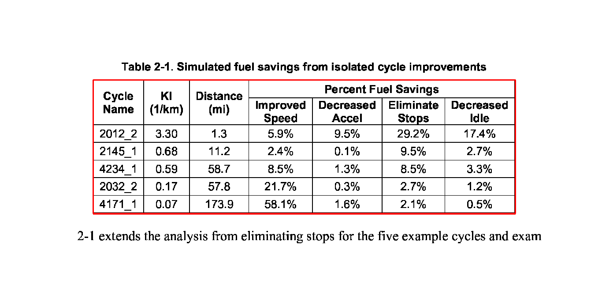
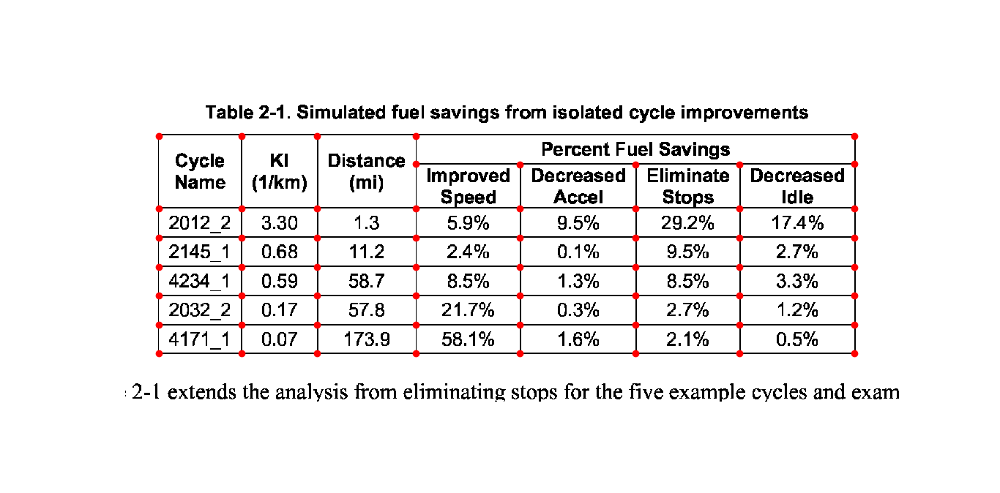
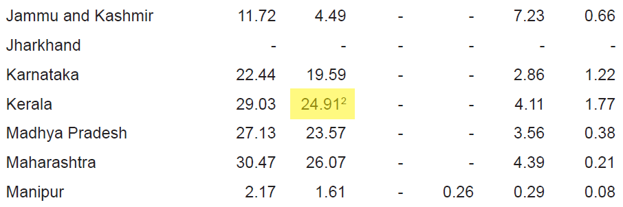
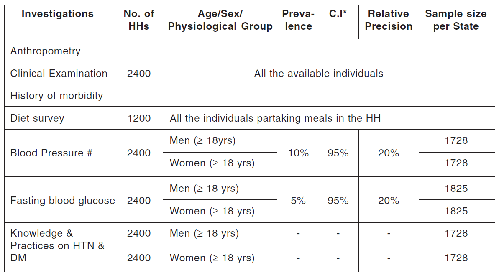

Advanced Usage
This page covers some of the more advanced configurations for Lattice and Stream.
Process background lines¶
To detect line segments, Lattice needs the lines that make the table to be in the foreground. Here's an example of a table with lines in the background:

Source: PDF
To process background lines, you can pass process_background=True.
tables = camelot.read_pdf('background_lines.pdf', process_background=True)
tables[1].df
Tip
Here's how you can do the same with the command-line interface.
$ camelot lattice -back background_lines.pdf
| State | Date | Halt stations | Halt days | Persons directly reached(in lakh) | Persons trained | Persons counseled | Persons testedfor HIV |
|---|---|---|---|---|---|---|---|
| Delhi | 1.12.2009 | 8 | 17 | 1.29 | 3,665 | 2,409 | 1,000 |
| Rajasthan | 2.12.2009 to 19.12.2009 | nan | nan | nan | nan | nan | nan |
| Gujarat | 20.12.2009 to 3.1.2010 | 6 | 13 | 6.03 | 3,810 | 2,317 | 1,453 |
| Maharashtra | 4.01.2010 to 1.2.2010 | 13 | 26 | 1.27 | 5,680 | 9,027 | 4,153 |
| Karnataka | 2.2.2010 to 22.2.2010 | 11 | 19 | 1.8 | 5,741 | 3,658 | 3,183 |
| Kerala | 23.2.2010 to 11.3.2010 | 9 | 17 | 1.42 | 3,559 | 2,173 | 855 |
| Total | nan | 47 | 92 | 11.81 | 22,455 | 19,584 | 10,644 |
Visual debugging¶
Note
Visual debugging using plot() requires matplotlib which is an optional dependency. You can install it using $ pip install camelot-py[plot].
You can use the plot() method to generate a matplotlib <https://matplotlib.org/>_ plot of various elements that were detected on the PDF page while processing it. This can help you select table areas, column separators and debug bad table outputs, by tweaking different configuration parameters.
You can specify the type of element you want to plot using the kind keyword argument. The generated plot can be saved to a file by passing a filename keyword argument. The following plot types are supported:
- 'text'
- 'grid'
- 'contour'
- 'line'
- 'joint'
- 'textedge'
Let's generate a plot for each type using this PDF as an example. First, let's get all the tables out.
>>> tables = camelot.read_pdf('foo.pdf')
>>> tables
<TableList n=1>
text¶
Let's plot all the text present on the table's PDF page.
>>> camelot.plot(tables[0], kind='text').show()
Tip
Here's how you can do the same with the command-line interface.
$ camelot lattice -plot text foo.pdf

This, as we shall later see, is very helpful with Stream for noting table areas and column separators, in case Stream does not guess them correctly.
Note
The x-y coordinates shown above change as you move your mouse cursor on the image, which can help you note coordinates.
table¶
Let's plot the table (to see if it was detected correctly or not). This plot type, along with contour, line and joint is useful for debugging and improving the extraction output, in case the table wasn't detected correctly. (More on that later.)
>>> camelot.plot(tables[0], kind='grid').show()
Tip
Here's how you can do the same with the command-line interface.
$ camelot lattice -plot grid foo.pdf
The table is perfect!
contour¶
Now, let's plot all table boundaries present on the table's PDF page.
>>> camelot.plot(tables[0], kind='contour').show()
Tip
Here's how you can do the same with the command-line interface.
$ camelot lattice -plot contour foo.pdf

line¶
Cool, let's plot all line segments present on the table's PDF page.
>>> camelot.plot(tables[0], kind='line').show()
Tip
Here's how you can do the same with the command-line interface.
$ camelot lattice -plot line foo.pdf

joint¶
Finally, let's plot all line intersections present on the table's PDF page.
>>> camelot.plot(tables[0], kind='joint').show()
Tip
Here's how you can do the same with the command-line interface.
$ camelot lattice -plot joint foo.pdf

textedge¶
You can also visualize the textedges found on a page by specifying kind='textedge'. To know more about what a "textedge" is, you can see pages 20, 35 and 40 of Anssi Nurminen's master's thesis.
>>> camelot.plot(tables[0], kind='textedge').show()
Tip
Here's how you can do the same with the command-line interface.
$ camelot stream -plot textedge foo.pdf

Specify table areas¶
In cases such as these, it can be useful to specify exact table boundaries. You can plot the text on this page and note the top left and bottom right coordinates of the table.
Table areas that you want Camelot to analyze can be passed as a list of comma-separated strings to :meth:read_pdf() <camelot.read_pdf>, using the table_areas keyword argument.
>>> tables = camelot.read_pdf('table_areas.pdf', flavor='stream', table_areas=['316,499,566,337'])
>>> tables[0].df
Tip
Here's how you can do the same with the command-line interface.
$ camelot stream -T 316,499,566,337 table_areas.pdf
| Unnamed: 0 | One Withholding |
|---|---|
| Payroll Period | Allowance |
| Weekly | $71.15 |
| Biweekly | 142.31 |
| Semimonthly | 154.17 |
| Monthly | 308.33 |
| Quarterly | 925.00 |
| Semiannually | 1,850.00 |
| Annually | 3,700.00 |
| Daily or Miscellaneous | 14.23 |
| (each day of the payroll period) | nan |
Note
table_areas accepts strings of the form x1,y1,x2,y2 where (x1, y1) -> top-left and (x2, y2) -> bottom-right in PDF coordinate space. In PDF coordinate space, the bottom-left corner of the page is the origin, with coordinates (0, 0).
Specify table regions¶
However there may be cases like 1 and 2, where the table might not lie at the exact coordinates every time but in an approximate region.
You can use the table_regions keyword argument to read_pdf() to solve for such cases. When table_regions is specified, Camelot will only analyze the specified regions to look for tables.
>>> tables = camelot.read_pdf('table_regions.pdf', table_regions=['170,370,560,270'])
>>> tables[0].df
Tip
Here's how you can do the same with the command-line interface.
$ camelot lattice -R 170,370,560,270 table_regions.pdf
| Età dell’Assicuratoall’epoca del decesso | Misura % dimaggiorazione |
|---|---|
| 18-75 | 1,00% |
| 76-80 | 0,50% |
| 81 in poi | 0,10% |
Specify column separators¶
In cases like these, where the text is very close to each other, it is possible that Camelot may guess the column separators' coordinates incorrectly. To correct this, you can explicitly specify the x coordinate for each column separator by plotting the text on the page.
You can pass the column separators as a list of comma-separated strings to :meth:read_pdf() <camelot.read_pdf>, using the columns keyword argument.
In case you passed a single column separators string list, and no table area is specified, the separators will be applied to the whole page. When a list of table areas is specified and you need to specify column separators as well, the length of both lists should be equal. Each table area will be mapped to each column separators' string using their indices.
For example, if you have specified two table areas, table_areas=['12,54,43,23', '20,67,55,33'], and only want to specify column separators for the first table, you can pass an empty string for the second table in the column separators' list like this, columns=['10,120,200,400', ''].
Let's get back to the x coordinates we got from plotting the text that exists on this PDF, and get the table out!
>>> tables = camelot.read_pdf('column_separators.pdf', flavor='stream', columns=['72,95,209,327,442,529,566,606,683'])
>>> tables[0].df
Tip
Here's how you can do the same with the command-line interface.
$ camelot stream -C 72,95,209,327,442,529,566,606,683 column_separators.pdf
| ... | ... | ... | ... | ... | ... | ... | ... | ... | ... |
|---|---|---|---|---|---|---|---|---|---|
| LICENSE | PREMISE | ||||||||
| NUMBER TYPE DBA NAME | LICENSEE NAME | ADDRESS | CITY | ST | ZIP | PHONE NUMBER | EXPIRES | ||
| ... | ... | ... | ... | ... | ... | ... | ... | ... | ... |
Ah! Since PDFMiner merged the strings, "NUMBER", "TYPE" and "DBA NAME", all of them were assigned to the same cell. Let's see how we can fix this in the next section.
Split text along separators¶
To deal with cases like the output from the previous section, you can pass split_text=True to :meth:read_pdf() <camelot.read_pdf>, which will split any strings that lie in different cells but have been assigned to a single cell (as a result of being merged together by PDFMiner).
>>> tables = camelot.read_pdf('column_separators.pdf', flavor='stream', columns=['72,95,209,327,442,529,566,606,683'], split_text=True)
>>> tables[0].df
Tip
Here's how you can do the same with the command-line interface.
$ camelot -split stream -C 72,95,209,327,442,529,566,606,683 column_separators.pdf
| ... | ... | ... | ... | ... | ... | ... | ... | ... | ... |
|---|---|---|---|---|---|---|---|---|---|
| LICENSE | PREMISE | ||||||||
| NUMBER | TYPE | DBA NAME | LICENSEE NAME | ADDRESS | CITY | ST | ZIP | PHONE NUMBER | EXPIRES |
| ... | ... | ... | ... | ... | ... | ... | ... | ... | ... |
Flag superscripts and subscripts¶
There might be cases where you want to differentiate between the text and superscripts or subscripts, like this PDF.

In this case, the text that other tools return, will be 24.912. This is relatively harmless when that decimal point is involved. But when it isn't there, you'll be left wondering why the results of your data analysis are 10x bigger!
You can solve this by passing flag_size=True, which will enclose the superscripts and subscripts with <s></s>, based on font size, as shown below.
>>> tables = camelot.read_pdf('superscript.pdf', flavor='stream', flag_size=True)
>>> tables[0].df
Tip
Here's how you can do the same with the command-line interface.
$ camelot -flag stream superscript.pdf
| ... | ... | ... | ... | ... | ... | ... | ... | ... | ... | ... |
|---|---|---|---|---|---|---|---|---|---|---|
| Karnataka | 22.44 | 19.59 | - | - | 2.86 | 1.22 | - | 0.89 | - | 0.69 |
| Kerala | 29.03 | 24.912 | - | - | 4.11 | 1.77 | - | 0.48 | - | 1.45 |
| Madhya Pradesh | 27.13 | 23.57 | - | - | 3.56 | 0.38 | - | 1.86 | - | 1.28 |
| ... | ... | ... | ... | ... | ... | ... | ... | ... | ... | ... |
Strip characters from text¶
You can strip unwanted characters like spaces, dots and newlines from a string using the strip_text keyword argument. Take a look at this PDF <https://github.com/camelot-dev/camelot/blob/master/tests/files/tabula/12s0324.pdf>_ as an example, the text at the start of each row contains a lot of unwanted spaces, dots and newlines.
>>> tables = camelot.read_pdf('12s0324.pdf', flavor='stream', strip_text=' .\n')
>>> tables[0].df
Tip
Here's how you can do the same with the command-line interface.
$ camelot -strip ' .\n' stream 12s0324.pdf
| ... | ... | ... | ... | ... | ... | ... | ... | ... | ... |
|---|---|---|---|---|---|---|---|---|---|
| Forcible rape | 17.5 | 2.6 | 14.9 | 17.2 | 2.5 | 14.7 | – | – | – |
| Robbery | 102.1 | 25.5 | 76.6 | 90.0 | 22.9 | 67.1 | 12.1 | 2.5 | 9.5 |
| Aggravated assault | 338.4 | 40.1 | 298.3 | 264.0 | 30.2 | 233.8 | 74.4 | 9.9 | 64.5 |
| Property crime | 1,396 .4 | 338 .7 | 1,057 .7 | 875 .9 | 210 .8 | 665 .1 | 608 .2 | 127 .9 | 392 .6 |
| Burglary | 240.9 | 60.3 | 180.6 | 205.0 | 53.4 | 151.7 | 35.9 | 6.9 | 29.0 |
| ... | ... | ... | ... | ... | ... | ... | ... | ... | ... |
Improve guessed table areas¶
While using Stream, automatic table detection can fail for PDFs like this one. That's because the text is relatively far apart vertically, which can lead to shorter textedges being calculated.
Note
To know more about how textedges are calculated to guess table areas, you can see pages 20, 35 and 40 of Anssi Nurminen's master's thesis.
Let's see the table area that is detected by default.
>>> tables = camelot.read_pdf('edge_tol.pdf', flavor='stream')
>>> camelot.plot(tables[0], kind='contour').show()
Tip
Here's how you can do the same with the command-line interface.
$ camelot stream -plot contour edge.pdf

To improve the detected area, you can increase the edge_tol (default: 50) value to counter the effect of text being placed relatively far apart vertically. Larger edge_tol will lead to longer textedges being detected, leading to an improved guess of the table area. Let's use a value of 500.
>>> tables = camelot.read_pdf('edge_tol.pdf', flavor='stream', edge_tol=500)
>>> camelot.plot(tables[0], kind='contour').show()
Tip
Here's how you can do the same with the command-line interface.
$ camelot stream -e 500 -plot contour edge.pdf

As you can see, the guessed table area has improved!
Improve guessed table rows¶
You can pass row_tol=<+int> to group the rows closer together, as shown below.
>>> tables = camelot.read_pdf('group_rows.pdf', flavor='stream')
>>> tables[0].df
| Clave | Clave | Clave | ||||
|---|---|---|---|---|---|---|
| Nombre Entidad | Nombre Municipio | Nombre Localidad | ||||
| Entidad | Municipio | Localidad | ||||
| 01 | Aguascalientes | 001 | Aguascalientes | 0094 | Granja Adelita | |
| 01 | Aguascalientes | 001 | Aguascalientes | 0096 | Agua Azul | |
| 01 | Aguascalientes | 001 | Aguascalientes | 0100 | Rancho Alegre |
>>> tables = camelot.read_pdf('group_rows.pdf', flavor='stream', row_tol=10)
>>> tables[0].df
Tip
Here's how you can do the same with the command-line interface.
$ camelot stream -r 10 group_rows.pdf
| Clave | Nombre Entidad | Clave | Nombre Municipio | Clave | Nombre Localidad | |
|---|---|---|---|---|---|---|
| Entidad | Municipio | Localidad | ||||
| 01 | Aguascalientes | 001 | Aguascalientes | 0094 | Granja Adelita | |
| 01 | Aguascalientes | 001 | Aguascalientes | 0096 | Agua Azul | |
| 01 | Aguascalientes | 001 | Aguascalientes | 0100 | Rancho Alegre |
Detect short lines¶
There might be cases while using Lattice when smaller lines don't get detected. The size of the smallest line that gets detected is calculated by dividing the PDF page's dimensions with a scaling factor called line_scale. By default, its value is 15.
As you can guess, the larger the line_scale, the smaller the size of lines getting detected.
.. warning:: Making line_scale very large (>150) will lead to text getting detected as lines.
Here's a PDF where small lines separating the the headers don't get detected with the default value of 15.

Let's plot the table for this PDF.
>>> tables = camelot.read_pdf('short_lines.pdf')
>>> camelot.plot(tables[0], kind='grid').show()

Clearly, the smaller lines separating the headers, couldn't be detected. Let's try with line_scale=40, and plot the table again.
>>> tables = camelot.read_pdf('short_lines.pdf', line_scale=40)
>>> camelot.plot(tables[0], kind='grid').show()
Tip
Here's how you can do the same with the command-line interface.
$ camelot lattice -scale 40 -plot grid short_lines.pdf

Voila! Camelot can now see those lines. Let's get our table.
>>> tables[0].df
| Investigations | No. ofHHs | Age/Sex/Physiological Group | Preva-lence | C.I* | RelativePrecision | Sample sizeper State |
|---|---|---|---|---|---|---|
| Anthropometry | 2400 | All ... | ||||
| Clinical Examination | ||||||
| History of morbidity | ||||||
| Diet survey | 1200 | All ... | ||||
| Blood Pressure # | 2400 | Men (≥ 18yrs) | 10% | 95% | 20% | 1728 |
| Women (≥ 18 yrs) | 1728 | |||||
| Fasting blood glucose | 2400 | Men (≥ 18 yrs) | 5% | 95% | 20% | 1825 |
| Women (≥ 18 yrs) | 1825 | |||||
| Knowledge &Practices on HTN &DM | 2400 | Men (≥ 18 yrs) | - | - | - | 1728 |
| 2400 | Women (≥ 18 yrs) | - | - | - | 1728 |
Shift text in spanning cells¶
By default, the Lattice method shifts text in spanning cells, first to the left and then to the top, as you can observe in the output table above. However, this behavior can be changed using the shift_text keyword argument. Think of it as setting the gravity for a table — it decides the direction in which the text will move and finally come to rest.
shift_text expects a list with one or more characters from the following set: ('', l', 'r', 't', 'b'), which are then applied in order. The default, as we discussed above, is ['l', 't'].
We'll use the PDF from the previous example. Let's pass shift_text=[''], which basically means that the text will experience weightlessness! (It will remain in place.)
>>> tables = camelot.read_pdf('short_lines.pdf', line_scale=40, shift_text=[''])
>>> tables[0].df
| Investigations | No. ofHHs | Age/Sex/Physiological Group | Preva-lence | C.I* | RelativePrecision | Sample sizeper State |
|---|---|---|---|---|---|---|
| Anthropometry | ||||||
| Clinical Examination | 2400 | All ... | ||||
| History of morbidity | ||||||
| Diet survey | 1200 | All ... | ||||
| Men (≥ 18yrs) | 1728 | |||||
| Blood Pressure # | 2400 | Women (≥ 18 yrs) | 10% | 95% | 20% | 1728 |
| Men (≥ 18 yrs) | 1825 | |||||
| Fasting blood glucose | 2400 | Women (≥ 18 yrs) | 5% | 95% | 20% | 1825 |
| Knowledge &Practices on HTN & | 2400 | Men (≥ 18 yrs) | - | - | - | 1728 |
| DM | 2400 | Women (≥ 18 yrs) | - | - | - | 1728 |
No surprises there — it did remain in place (observe the strings "2400" and "All the available individuals"). Let's pass shift_text=['r', 'b'] to set the gravity to right-bottom and move the text in that direction.
>>> tables = camelot.read_pdf('short_lines.pdf', line_scale=40, shift_text=['r', 'b'])
>>> tables[0].df
Tip
Here's how you can do the same with the command-line interface.
$ camelot lattice -scale 40 -shift r -shift b short_lines.pdf
| Investigations | No. ofHHs | Age/Sex/Physiological Group | Preva-lence | C.I* | RelativePrecision | Sample sizeper State |
|---|---|---|---|---|---|---|
| Anthropometry | ||||||
| Clinical Examination | ||||||
| History of morbidity | 2400 | All ... | ||||
| Diet survey | 1200 | All ... | ||||
| Men (≥ 18yrs) | 1728 | |||||
| Blood Pressure # | 2400 | Women (≥ 18 yrs) | 10% | 95% | 20% | 1728 |
| Men (≥ 18 yrs) | 1825 | |||||
| Fasting blood glucose | 2400 | Women (≥ 18 yrs) | 5% | 95% | 20% | 1825 |
| 2400 | Men (≥ 18 yrs) | - | - | - | 1728 | |
| Knowledge &Practices on HTN &DM | 2400 | Women (≥ 18 yrs) | - | - | - | 1728 |
Copy text in spanning cells¶
You can copy text in spanning cells when using Lattice, in either the horizontal or vertical direction, or both. This behavior is disabled by default.
copy_text expects a list with one or more characters from the following set: ('v', 'h'), which are then applied in order.
Let's try it out on this PDF. First, let's check out the output table to see if we need to use any other configuration parameters.
>>> tables = camelot.read_pdf('copy_text.pdf')
>>> tables[0].df
| Sl. No. | Name of State/UT | Name of District | Disease/ Illness | No. of Cases | No. of Deaths | Date of start of outbreak | Date of reporting | Current Status | ... |
|---|---|---|---|---|---|---|---|---|---|
| 1 | Kerala | Kollam | i. Food Poisoning | 19 | 0 | 31/12/13 | 03/01/14 | Under control | ... |
| 2 | Maharashtra | Beed | i. Dengue & Chikungunya i | 11 | 0 | 03/01/14 | 04/01/14 | Under control | ... |
| 3 | Odisha | Kalahandi | iii. Food Poisoning | 42 | 0 | 02/01/14 | 03/01/14 | Under control | ... |
| 4 | West Bengal | West Medinipur | iv. Acute Diarrhoeal Disease | 145 | 0 | 04/01/14 | 05/01/14 | Under control | ... |
| Birbhum | v. Food Poisoning | 199 | 0 | 31/12/13 | 31/12/13 | Under control | ... | ||
| Howrah | vi. Viral Hepatitis A &E | 85 | 0 | 26/12/13 | 27/12/13 | Under surveillance | ... |
We don't need anything else. Now, let's pass copy_text=['v'] to copy text in the vertical direction. This can save you some time by not having to add this step in your cleaning script!
>>> tables = camelot.read_pdf('copy_text.pdf', copy_text=['v'])
>>> tables[0].df
Tip
Here's how you can do the same with the command-line interface.
$ camelot lattice -copy v copy_text.pdf
| Sl. No. | Name of State/UT | Name of District | Disease/ Illness | No. of Cases | No. of Deaths | Date of start of outbreak | Date of reporting | Current Status | ... |
|---|---|---|---|---|---|---|---|---|---|
| 1 | Kerala | Kollam | i. Food Poisoning | 19 | 0 | 31/12/13 | 03/01/14 | Under control | ... |
| 2 | Maharashtra | Beed | i. Dengue & Chikungunya i | 11 | 0 | 03/01/14 | 04/01/14 | Under control | ... |
| 3 | Odisha | Kalahandi | iii. Food Poisoning | 42 | 0 | 02/01/14 | 03/01/14 | Under control | ... |
| 4 | West Bengal | West Medinipur | iv. Acute Diarrhoeal Disease | 145 | 0 | 04/01/14 | 05/01/14 | Under control | ... |
| 4 | West Bengal | Birbhum | v. Food Poisoning | 199 | 0 | 31/12/13 | 31/12/13 | Under control | ... |
| 4 | West Bengal | Howrah | vi. Viral Hepatitis A &E | 85 | 0 | 26/12/13 | 27/12/13 | Under surveillance | ... |
Tweak layout generation¶
Camelot is built on top of PDFMiner's functionality of grouping characters on a page into words and sentences. In some cases (such as #170 and #215), PDFMiner can group characters that should belong to the same sentence into separate sentences.
To deal with such cases, you can tweak PDFMiner's LAParams kwargs to improve layout generation, by passing the keyword arguments as a dict using layout_kwargs in read_pdf(). To know more about the parameters you can tweak, you can check out PDFMiner docs.
>>> tables = camelot.read_pdf('foo.pdf', layout_kwargs={'detect_vertical': False})
Use alternate image conversion backends¶
When using the Lattice flavor, Camelot uses ghostscript to convert PDF pages to images for line recognition. If you face installation issues with ghostscript, you can use an alternate image conversion backend called poppler. You can specify which image conversion backend you want to use with::
>>> tables = camelot.read_pdf(filename, backend="ghostscript") # default
>>> tables = camelot.read_pdf(filename, backend="poppler")
Note
ghostscript will be replaced by poppler as the default image conversion backend in v0.12.0.
If you face issues with both ghostscript and poppler, you can supply your own image conversion backend:
>>> class ConversionBackend(object):
>>> def convert(pdf_path, png_path):
>>> # read pdf page from pdf_path
>>> # convert pdf page to image
>>> # write image to png_path
>>> pass
>>>
>>> tables = camelot.read_pdf(filename, backend=ConversionBackend())